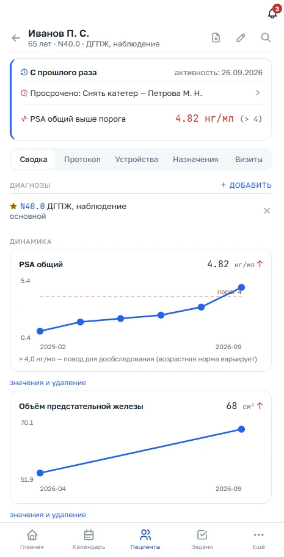
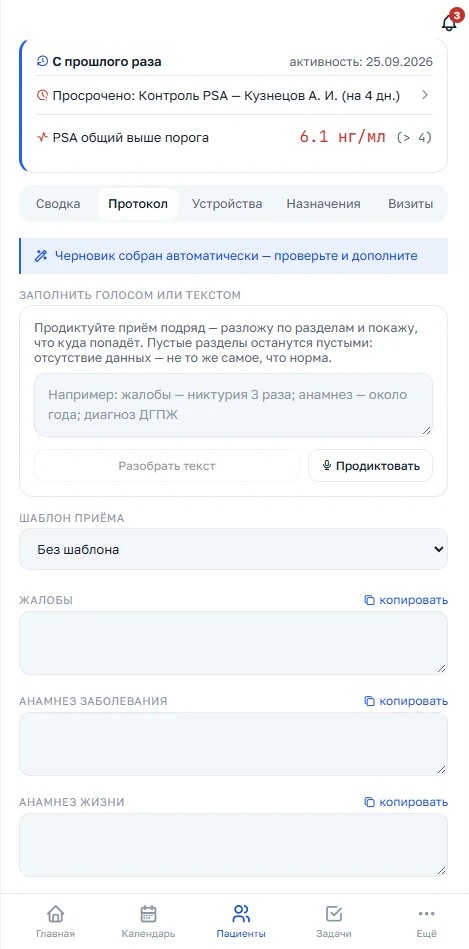
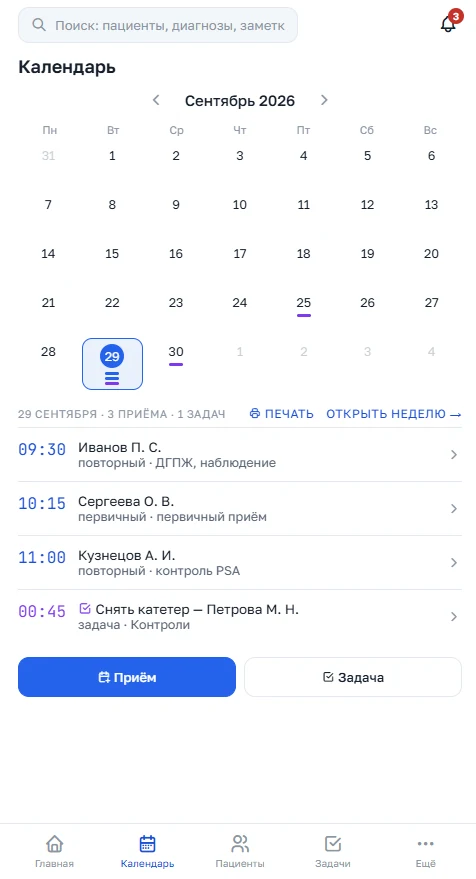
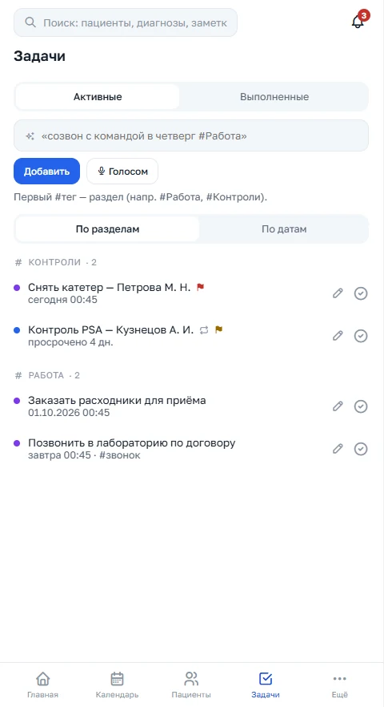

Приём идёт двадцать минут, а помнить про пациента нужно годами. Система держит в памяти анализы, документы и динамику показателей — и сама показывает, к кому пора вернуться. Выводы делаете вы: она не ставит диагнозов и ничего не назначает.

Это не медицинский ИИ и не система принятия решений. Это память, которая хранит факты, показывает, что изменилось, и говорит, куда посмотреть. Дальше — вы.
Значение привязано к показателю, а не к бумажке, в которой оно приехало. ПСА, объём простаты, Qmax, креатинин выстраиваются в ряд по датам: было — стало, вверх или вниз. Не нужно перелистывать полгода выписок, чтобы понять, что ПСА растёт третий визит подряд.
Пять готовых списков по всей базе — система сама собирает тех, кого нельзя забыть:
Снимок анализа или голосовая заметка превращаются в значения в карте. Даже если наговорить подряд про нескольких пациентов, система разложит сказанное по нужным картам — и остановится, ожидая вашего подтверждения.
От первичного приёма при СНМП до онкоконтроля, дренажей и выписки. Шаблон подсказывает, что стоит не забыть спросить и заполнить. Ничего не назначает и не заполняет за вас.
Конфликт назначения с аллергией, дубль, значение вне диапазона, несходящиеся даты — подсвечиваются сразу. Всегда как вопрос к врачу и никогда как запрет.
Ищет по тексту документов, заметок и расшифровок: «цистостома, креатинин 400» — и вы видите, у кого и когда это было, даже если помните только обрывок фразы.
Фото анализа, выписки или голосовая заметка. Система распознаёт значения и сама замечает, если документ от другого пациента или уже был внесён.
Распознанное ждёт в отдельной очереди и помечено как непроверенное. В карту оно попадает только тогда, когда вы это подтвердили — одним касанием.
Открывая карту повторного пациента, вы первым делом видите блок «Изменения с последнего визита». Всё, что не менялось, свёрнуто и не отвлекает.
Снято в работающем приложении на вымышленном пациенте. Выглядит ровно так же, как будет выглядеть у вас.

Говорите подряд, как думаете: жалобы, анамнез, осмотр. Система раскладывает сказанное по полям протокола и честно оставляет пустым то, о чём вы не сказали — отсутствие данных не выдаётся за норму.

Приёмы и дела в одном списке, у каждого видно, первичный он или повторный и с чем пациент приходит. День и неделю можно распечатать и взять с собой.

Задачу можно наговорить одной фразой — «снять катетер Петровой в четверг». Просроченное подсвечивается, повторяющееся возвращается само.
Система управляет информацией и не участвует в принятии решений. Граница жёсткая: она показывает факты, выводы делает врач.
Серверы в РФ. Чувствительные поля хранятся зашифрованными, врачи изолированы друг от друга на уровне кода и базы — чужую карту не открыть, даже зная её номер.
У каждого изменения сохраняются прежнее значение, новое, автор и дата. Записи не стираются насовсем, обращения к картам пишутся в журнал доступа.
Выгрузка всех своих данных одной кнопкой, в любой момент и без просьб к поддержке. Уходите — забираете базу с собой.
Бумажный бланк, подписанный в приложении или оформленный дистанционно — способ, дата и версия текста сохраняются рядом с картой, а не в отдельной папке.
Демо открыто без регистрации: внутри вымышленный пациент, на нём можно потрогать всё — распознавание, подтверждение значений, динамику и списки. Сейчас идёт подготовка к запуску, об условиях подписки расскажем отдельно.